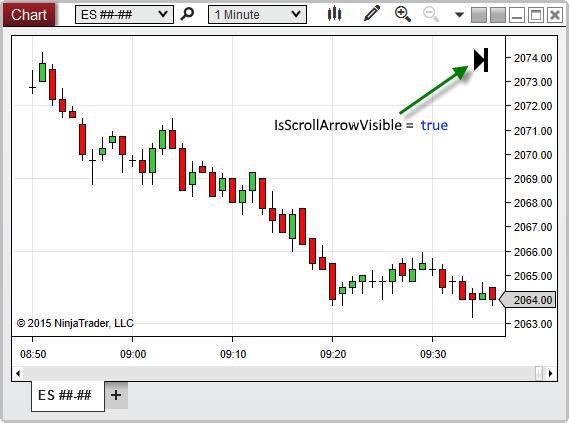

|
<< Click to Display Table of Contents >> IsScrollArrowVisible |


|
IsScrollArrowVisible
|
<< Click to Display Table of Contents >> IsScrollArrowVisible |
|
Indicates the time-axis scroll arrow is visible in the top-right corner of the chart.
A bool value. When True, indicates that the scroll arrow is visible on the chart; otherwise False.
<ChartControl>.IsScrollArrowVisible
protected override void OnRender(ChartControl chartControl, ChartScale chartScale) |
Based on the image below, IsScrollArrowVisible confirms that the scroll arrow is currently visible on the chart.
